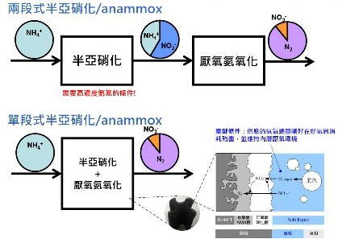
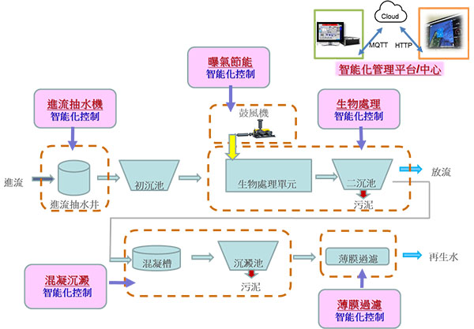
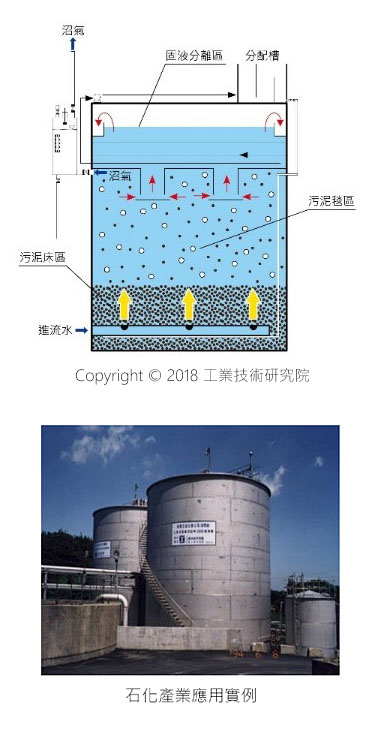

參展廠商搶先報
參展廠商搶先報
 水環境建設及周邊服務區
水環境建設及周邊服務區
工研院水科技研究組隨著臺灣產業的演變，從早期的輔導傳統產業進行工業廢水處理，逐漸擴展到協助高科技產業製程廢水處理，並致力於廢水的回收再利用。其研究領域從實驗室研究，模型廠驗證到實廠設計，持續擴大成長，建立了具有競爭力的水處理核心技術與專利布局，同時也擁有水處理模組與系統的設計能力。
透過與國內外廠商的合作，已累積了超過25年的水處理經驗，並且有超過100個以上的成功實廠案例。服務對象包括廣泛，包含電子業、面板業、石化業和化工業等。此外，工研院已成功地將多項水處理與回收技術移轉至水處理產業，藉由提供最佳的技術與服務，以協助客戶減少對環境的衝擊，同時提高生產效率及產品品質。
-
厭(無)氧氨氧化技術
厭氧氨氧化是一種有效的廢水除氮技術，能夠在硝化程序將約一半的氨氮轉化成亞硝酸氮後，進一步利用厭氧氨氧化程序將剩下的氨氮和亞硝酸氮同時轉換成氮氣。
相較於傳統硝化/脫硝技術，此技術可節省近一半的曝氣動力，同時不需要添加額外有機碳源，對於處理碳源不足或是低COD/N比值的廢水更具經濟效益。
特點：- 減少60%傳統硝化反應所需之曝氣動力
- 無需添加傳統脫硝反應所需之甲醇
- 減少50%傳統硝化脫硝產生之廢棄污泥
-
上流式厭氧污泥床(UASB)
工研院開發之上流式厭氧污泥床技術已廣泛應用於國內外石化、化工、塑膠、光電等產業的廢水處理技術，且已經有50多個成功案例。該技術包括四個主要部分：進流水分配裝置、污泥床、污泥毯和氣固液分離裝置。
在厭氧條件下，有機廢水被厭氧微生物降解代謝成甲烷氣體和二氧化碳。廢水、微生物和生物產生的氣體分別被導引到三相分離器中，氣體被收集並排出槽外，可用於發電或產熱。
特點：- 低初設成本
- 低操作成本
- 具有新興能源（如：甲烷）回收潛力
-
智能化水處理技術
智能化技術是在自動化的基礎上加入了智慧程序，使得系統能夠根據不同的情況做出適當的反應，就像人類一樣具有智能。本技術整合了AIoT智能化、自動化和水處理相關技術，能夠提供成套的智能化解決方案，適用於多種不同的水處理流程，包括進流抽水、曝氣調節、生物處理、混凝沉澱和薄膜過濾等。此外，整套系統還包含可視化的遠端控制平台，能夠提供即時的水處理資訊並實現遠端控制。
特點：- 降低能源、藥品和材料的使用，操作費用可節省20%以上。
- 提高系統的穩定性，能夠預警，減少人為疏失的發生。
- 可視化平台提供完整的水處理設備整合資訊，方便決策與管理。